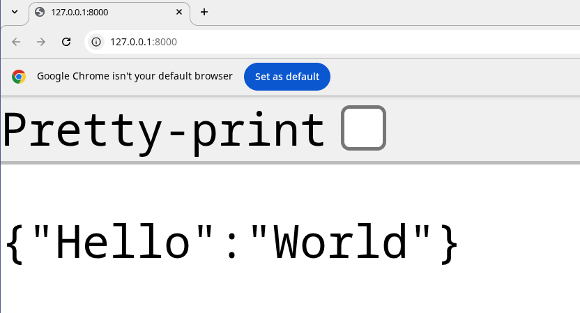

Getting Started
In this chapter, we will establish a minimal FastAPI development environment, covering prerequisites, package management with uv, and the orchestration of a basic service.
Prerequisites
Before proceeding, ensure the following tools are installed on your system:
- Python 3.12+: The core language runtime.
- Text Editor: A modern editor such as VS Code, PyCharm, or Zed.
- Unix-like Environment: Linux, macOS, or Windows with WSL.
- Git: For version control.
- Docker & Docker Compose: For containerization and service orchestration.
Note
This guide uses VS Code with the Microsoft Python Extension on an Arch Linux system with the Fish shell. However, the instructions are compatible with any standard Unix-like environment and shell.
Introduction to uv
Throughout this course, we will use uv as our primary package and project manager. Written in Rust, uv is an exceptionally fast and modern alternative to traditional tools such as pip, pipenv, and poetry.
Beyond package installation, uv provides robust features for:
- Python Version Management: Seamlessly switching between Python runtimes.
- Dependency Resolution: Rapid and reliable resolution for complex dependency trees.
- Building & Publishing: Streamlined workflows for package distribution.
- Script Execution: Running scripts within isolated, reproducible environments.
Installation Methods
Multiple installation methods are available for uv, depending on your operating system:
Using Curl (Linux, macOS, and Unix-derived platforms)
Using PowerShell (Windows)
Using Pipx
For comprehensive details, refer to the official uv installation documentation.
Initializing a uv Project
After installation, verify the setup by executing the uv command:
$ uv
An extremely fast Python package manager.
Usage: uv [OPTIONS] <COMMAND>
Commands:
auth Manage authentication
run Run a command or script
init Create a new project
add Add dependencies to the project
remove Remove dependencies from the project
version Read or update the project's version
The uv tool suite also includes uvx, a utility designed for executing binaries and Python tools directly without permanent installation:
To initialize a new project, use the uv init command:
This command generates a directory named fastapi-beyond-crud containing the following structure:
Project File Overview
-
main.py: A boilerplate Python script to verify the environment. -
pyproject.toml: The primary configuration file for the project, handling dependency management, metadata, and tool-specific settings. -
.python-version: Specifies the Python version pinned for the project. -
README.md: A Markdown file for project documentation.
Executing the Project
With the project structure established, use the uv run command to execute the starter script:
$ uv run main.py
Using CPython 3.13.11
Creating virtual environment at: .venv
Hello from fastapi-beyond-crud!
Upon execution, uv automatically creates an isolated virtual environment in the .venv directory and generates a uv.lock file to ensure deterministic builds by pinning specific dependency versions.
.
├── .gitignore
├── main.py
├── pyproject.toml
├── .python-version
├── README.md
├── uv.lock
└── .venv
The uv run command can execute standalone Python scripts or binaries available within the project environment. Running uv run without arguments displays available binaries:
$ uv run
Provide a command or script to invoke with `uv run <command>` or `uv run <script>.py`.
The following commands are available in the environment:
- python
- python3
- python3.13
To enter an interactive Python REPL within the project environment:
$ uv run python
Python 3.13.11 (main, Dec 17 2025, 21:08:16) [Clang 21.1.4 ] on linux
Type "help", "copyright", "credits" or "license" for more information.
>>>
Dependency Management
Adding Dependencies: To install a new package, use uv add:
Removing Dependencies: To uninstall a package, use uv remove:
Installing FastAPI
With the project initialized, the next step is to install FastAPI. We utilize the uv add command to install the framework along with its standard production dependencies.
The fastapi[standard] meta-package installs several key dependencies:
email-validator: Provides email validation via Pydantic.httpx: Necessary for using theTestClientduring automated testing.jinja2: The default template engine.python-multipart: Required for processing form data.uvicorn: A high-performance ASGI server.fastapi-cli: Provides thefastapicommand-line interface.
Verifying the Installation
After installation, verify the available commands by running uv run:
The fastapi command is the primary entry point for managing and running your application. You can explore its capabilities using the --help flag:
$ uv run fastapi --help
Usage: fastapi [OPTIONS] COMMAND [ARGS]...
FastAPI CLI - The fastapi command line app. 😎
Manage your FastAPI projects, run your FastAPI apps, and more.
The FastAPI CLI provides several essential subcommands:
- dev: Starts the application in development mode with auto-reload enabled.
- run: Executes the application in production mode.
- deploy: Facilitates deployment to FastAPI Cloud.
Creating a Basic Application
To test the installation, update main.py with the following minimal FastAPI application:
from fastapi import FastAPI
app = FastAPI()
@app.get("/")
def index() -> dict:
return {"Hello": "World"}
Running the Development Server
Execute the application using the fastapi dev command:
$ uv run fastapi dev
FastAPI Starting development server 🚀
server Server started at http://127.0.0.1:8000
server Documentation at http://127.0.0.1:8000/docs
tip Running in development mode; for production, use: fastapi run
In development mode, the server will automatically monitor for file changes and reload the application, ensuring a seamless development workflow.
Note
FastAPI CLI can automatically detect your application if you specify it in your pyproject.toml file. This allows you to run uv run fastapi dev or uv run fastapi run without manually specifying the application object.
You can configure this by adding the following to your pyproject.toml:
With this configuration, you can directly run:
Instead of the more verbose:
Where [PATH] is the path to your application instance (e.g., main.py). You can also use the following options:
--host: The address to serve on (default:127.0.0.1).--port: The port to serve on (default:8000).--reload: Enables auto-reload on code changes.--entrypoint: Manually specifies the app import string (e.g.,main:app).
Let us navigate to the docs at http://127.0.0.1:8000/ and we should see the following:

Tip
You can still use traditional virtual environments with uv venv, activate them with source .venv/bin/activate, and use uv pip if you prefer a more familiar workflow.
Scaffolding with fastapi-new
For an even faster setup, you can use fastapi-new to bootstrap a project structure automatically:
$ uvx run fastapi-new fastapi-beyond-crud
Installed 11 packages in 40ms
FastAPI Creating a new project 🚀
env Setting up environment with uv
deps Installing dependencies...
template Writing template files...
success ✨ Success! Created FastAPI project: fastapi-beyond-crud
Next steps:
$ cd fastapi-beyond-crud
$ uv run fastapi dev
Visit http://localhost:8000
Deploy to FastAPI Cloud:
$ uv run fastapi login
$ uv run fastapi deploy
💡 Tip: Use 'uv run' to automatically use the project's environment
Following these steps will generate the same FastAPI application we built manually, but with significantly less effort.
Conclusion
In this chapter, we established a robust foundation for FastAPI development using uv. We covered project initialization, dependency management, and running a development server with the FastAPI CLI. With an auto-reloading environment ready, we can now move on to building more complex features.